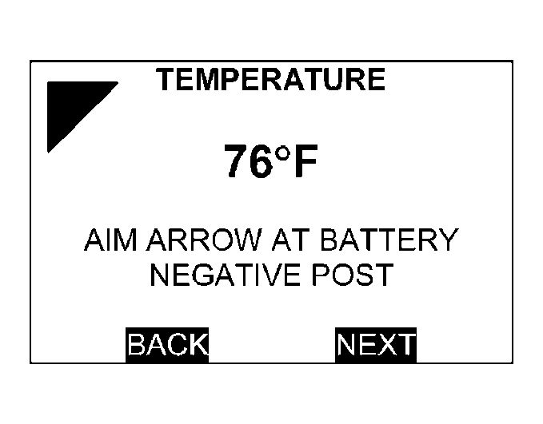
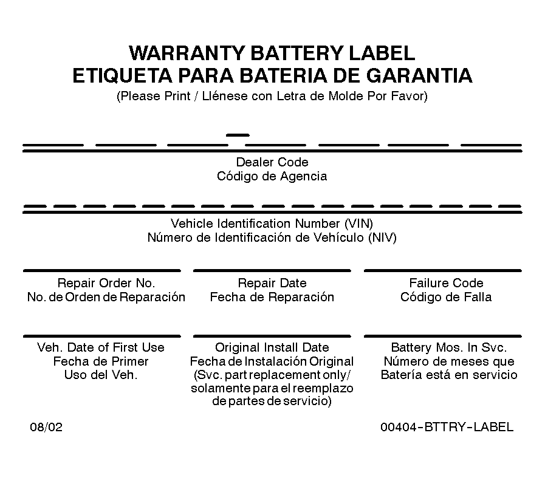

Battery Maintenance For In-Stock Vehicles & Pre-Delivery (PG017-02 REV.)
Reference number: PG017-02 REV.
Supersedes refnos: PG001-06, PG017-02
BATTERY MAINTENANCE FOR IN-STOCK VEHICLES & PRE-DELIVERY
TECHNICAL SERVICE BULLETIN
| TOYOTA: | All Models & Model Years |
| SECTION: | PRODUCT GENERAL INFORMATION |
| COPYRIGHT: | © 2018 Toyota, USA License Agreement TMS1002 |
- November 28, 2006: "Required SSTs" have been updated (SST P/N 00002-MCGR8 has been added). "Recommended Equipment" has been removed (superseded by SST P/N 00002-MCGR8). Screen prints and text have been updated in the "Battery Inspection Procedure". "Battery Service Procedure" has been renamed "Battery Inspection Results". Two sections have been added for SST P/N 00002-MCGR8: "Battery Charging Procedure" and "Battery Charging Results". PLEASE READ ENTIRE TSB.
Previous versions of this TSB should be discarded.
TSB No. PG017-02 is now obsolete and should be discarded.
Introduction
A battery in a stored vehicle is subject to conditions that can reduce its performance and life. These conditions include storage period, temperature, parasitic drain, and battery load. Because of these factors, battery inspection and maintenance are required in order to ensure proper operation and optimal battery life.
As a matter of policy, Toyota does not provide battery warranty coverage for discharged and/or failed batteries due to lack of maintenance. It is the dealer's responsibility to maintain the specified State of Charge (SOC) of the vehicle's battery while in stock and assure proper State of Charge (SOC) at delivery.
To eliminate customer service concerns due to an undercharged battery during the first few weeks of ownership, all dealers should check battery State of Charge (SOC) and recharge, if necessary, within 48 hours of delivery to customers.
Applicable Vehicles
- All models and model years.
Warranty Information
| OP CODE | DESCRIPTION | TIME | OFP | T1 | T2 |
|---|---|---|---|---|---|
| N/A | Not Applicable to Warranty | - | - | - | - |
Required SSTs
| ITEM NO. | SPECIAL SERVICE TOOLS (SSTs) | PART NUMBER | QTY | DRW(2) | |||||||
|---|---|---|---|---|---|---|---|---|---|---|---|
| 1 | Digital Battery System Analyzer (1)
NOTE:
|
00002-V8150-KIT | 1 | 19 | |||||||
| 2 | GR8 Battery Diagnostic Station (1)
NOTE:
|
00002-MCGR8 | 1 | N/A(3) | |||||||
|
|||||||||||


- The Digital Battery System Analyzer (P/N 00002-V8150-KIT) supersedes the Midtronics MICROPRO 815 Digital Battery Tester (P/N 00002-MP815-T). P/N 00002-MP815-T is now obsolete.
- The GR8 Battery Diagnostic Station (P/N 00002-MCGR8) supersedes the Automatic Trickle Charger (P/N 00002-YA122-01) and Fast Battery Chargers (Associated P/N ASE6003 and Christie P/N CAPPDQ). P/N 00002-YA122-01, ASE6003, and CAPPDQ are now obsolete.
- Additional SSTs may be ordered by calling SPX/OTC at 1-800-933-8335.
Battery Inspection Procedure
All vehicles are to be inspected according to the procedures listed below using the Digital Battery System Analyzer (P/N 00002-V8150-KIT) no more than 48 hours prior to customer vehicle delivery.
IMPORTANT NOTE FOR HYBRID VEHICLES:
In hybrid vehicles, the Digital Battery System Analyzer (SST P/N 00002-V8150-KIT) is to be used ONLY on the AUXILIARY (12 volt) battery.
- Connect test clamps to the battery. (If the analyzer does NOT power up automatically, press the POWER button.)
- Select the correct USER ID (if applicable) and press the NEXT soft key.
- Enter USER PIN
(if applicable) and press the NEXT
soft key.NOTE: For details on defining USER ID or PIN, refer to the NVS-8150 Instruction Manual.
- Press the NEXT soft key (if applicable) when the HELLO screen appears to proceed to the Main Menu.
- Choose BATTERY TEST and press the SELECT soft key.
- Select IN VEHICLE and press the NEXT soft key.
- Select MODEL
and press the NEXT
soft key.NOTE:
- "MODEL" or "STOCK #" MUST be used to receive a warranty code if the tester determines that the battery is bad.
- "MODEL" and "STOCK #" are linked to custom algorithms and are the most accurate testing procedures.
- Select the appropriate model and press the NEXT soft key.
- Select OEM battery type and press the NEXT soft key.
- Choose the correct battery (model number and CCA) and press the NEXT soft key.
- Aim the infrared (IR) temperature measurement sensor at the negative (-) battery post and press the NEXT
soft key.

Courtesy of © TOYOTA, LICENSE AGREEMENT TMS1002The battery is now being tested. The progress bar fills in across the screen while testing.
- Read or print the battery test results (press the PRINT soft key to print).

Battery Inspection Results
Once the test completes, proceed with one of the 5 procedures below according to the BATTERY CONDITION results.
- Battery Condition: "GOOD BATTERY"
Return the battery to service.
- Battery Condition: "GOOD-RECHARGE"
Fully charge the battery using the GR8 Battery Diagnostic Station (P/N 00002-MCGR8) and return it to service.
- Battery Condition: "CHARGE & RETEST"
Fully charge the battery using the GR8 Battery Diagnostic Station (P/N 00002-MCGR8) and retest.
NOTE: Failure to fully charge the battery before retesting may cause false readings. - Battery Condition: "REPLACE BATTERY"
Replace the battery.
NOTE: A REPLACE BATTERY result may also mean a poor connection between the battery cables and the battery. Retest the battery using the out-of-vehicle test before replacing it. - Battery Condition: "BAD CELL-REPLACE"
Replace the battery. The decision indicates a bad cell within the battery.
CAUTION:- If "FROZEN BATTERY" is displayed as the test result, allow the battery to reach a temperature of 40°F (4°C) before retesting.
- NEVER CHARGE A FROZEN BATTERY. GASES MAY FORM, CRACKING THE CASE AND CAUSING BATTERY ACID TO LEAK.
Battery Charging Procedure
If the battery requires charging, follow the procedures below using the GR8 Battery Diagnostic Station (P/N 00002-MCGR8).
- Connect the charger cables to the positive (+) and negative (-) battery terminals.
- Plug the charger into the 110V outlet and turn the switch to the ON position.
- Select appropriate USER ID (if applicable) and press the NEXT soft key.
- Enter USER PIN
(if applicable) and press the NEXT
soft key.NOTE: For details on defining USER ID or PIN, refer to the GR8 Instruction Manual.
- Press the NEXT soft key when the HELLO screen appears to proceed to the Main Menu.
- Select CHARGING from the Main Menu screen and press the SELECT soft key.
- Select DIAGNOSTIC from the Charge Menu screen and press the SELECT soft key.
- Select IN VEHICLE and press the NEXT soft key.
- Select MODEL
and press the NEXT
soft key.NOTE:
- "MODEL" or "STOCK #" MUST be used to receive a warranty code if the tester determines that the battery is bad.
- "MODEL" and "STOCK #" are linked to custom algorithms and are the most accurate testing procedures.
- Select the appropriate model and press the NEXT soft key.
- Select OEM battery type and press the NEXT soft key.
- Choose the correct battery (model number and CCA) and press the NEXT
soft key.
The battery will be tested before charging will occur. The progress bar fills in across the screen while testing.
The charger starts charging upon completion of testing. The screen displays the status of charge.
- Read or print the battery test results.
P 1/4: BATTERY RESULTS
P 2/4: STATE OF CHARGE (SOC)
P 3/4: STATE OF HEALTH (SOH)
P 4/4: WARRANTY CODE
To print:
Align the Midtronics IR Printer (P/N 00002-A0870, component of P/N 00002-V8150-KIT) in front of the IR port on the charger and select the PRINT soft key.


Battery Charging Results
Once the test completes, proceed with 1 of the 3 procedures below according to the BATTERY CONDITION results.
- Battery Condition: "GOOD BATTERY"
Return the battery to service.
- Battery Condition: "REPLACE BATTERY"
Replace the battery. Print the RESULTS screen for WARRANTY CODE by pressing the PRINT soft key.
NOTE: A REPLACE BATTERY result may also mean a poor connection between the battery cables and the battery. Retest the battery using the out-of-vehicle test before replacing it. - Battery Condition: "BAD CELL-REPLACE"
Replace the battery. The decision indicates a bad cell within the battery. Print the RESULTS screen for WARRANTY CODE by pressing the PRINT soft key.
Battery Replacement
If a vehicle battery needs to be replaced for a warrantable condition, complete a Warranty Battery Label and affix it to the failed battery for proper warranty parts and claim processing. Include the Vehicle Identification Number (VIN) and warranty code on the Warranty Battery Label.

Courtesy of © TOYOTA, LICENSE AGREEMENT TMS1002Battery Maintenance
Recommended Battery Maintenance:
In addition to this new pre-delivery battery test, a monthly battery inspection is still required for stored vehicles. If your dealership is located in an area subject to extreme temperatures (hot or cold), periodic maintenance may need to be performed more frequently.
To reduce parasitic battery drain on vehicles in storage for one week or more, the negative (-) battery cable should always be disconnected to reduce battery discharge. When the negative (-) battery cable is reconnected, please check and reset electrical components, such as the clock, radio, etc., and re-initialize all applicable systems/functions.
Refer to the appropriate model and year service bulletins for specific details.
For example: